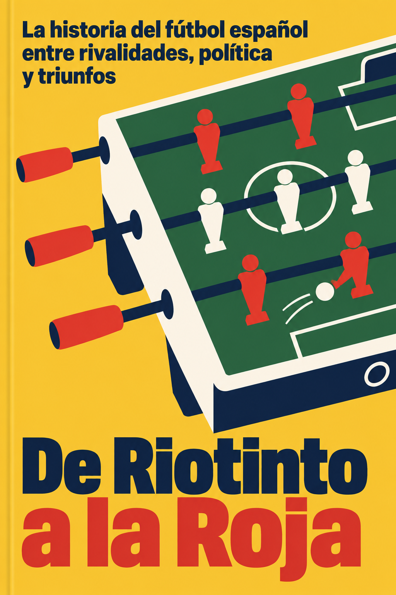

Las formas, el texto y el fondo necesitan trabajar juntos.
En mi última propuesta cambié el objeto, el color y el orden de las palabras. La estructura siguió siendo un mensaje, un objeto completo y un título enorme. Estas referencias muestran relaciones más interesantes entre las partes.
Las líneas señalan regiones aproximadas para observar la composición; no son medidas de calidad.
Headway · El elefante en el cerebro
Dos significados comparten una forma.
El elefante se encaja en la cabeza y su trompa se curva junto al ojo. Las masas azules construyen a la vez el motivo y el fondo que recibe las letras. La idea aparece en la relación entre siluetas.
Headway · Hábitos mínimos
El gesto organiza el espacio.
El hueco pequeño entre los dedos expresa la escala de los hábitos. El título inclinado sigue esa zona y el mensaje ocupa el campo naranja libre. La mano puede ser grande sin llenar toda la cubierta de detalles.
Mi última propuesta · De Riotinto a la Roja

Cambié la posición, pero seguían separados.
El tablero conserva cantos, laterales y barras en perspectiva. Quitar sombras a las piezas no transforma esa construcción. El título y el mensaje tienen mucho peso y se suman a la mesa sin una relación gráfica particular.
La instrucción también formaba parte del problema.
En mi prompt pedí para el título «very heavy slightly condensed»: muy pesado y algo condensado. Es exactamente un tratamiento que estaba repitiendo demasiado.
Describí demasiadas piezas del objeto antes de resolver la idea. El futbolín explica el tema general; su construcción detallada aporta poco al recorrido histórico del libro.
La edición conservaba la estructura que había que revisar. Pedí mantener composición, dibujo y letras, y cambiar el sombreado. El arreglo quedó limitado al acabado.
Las referencias no acompañaron a esa edición. Las había observado para escribir el prompt, pero adjunté únicamente mi propia portada. Faltó una comparación visual directa dentro de ese paso.
La revisión aceptó desviaciones visibles. El fondo y el objeto todavía tienen variaciones tonales. La corrección no cumplía por completo el plano estricto que se había solicitado.
Qué conviene conservar entre portadas.
La claridad de las siluetas, el grado de simplificación, el peso relativo de las letras y el acabado pueden dar continuidad al catálogo. La originalidad puede crecer en la idea, la acción, el encuadre, las relaciones entre formas y la colocación del texto.
Headway también usa texturas, facetas, sombras y distintas letras en algunas capturas. Esas excepciones importan: reducir su diseño a cinco colores o a una sola fuente sería una explicación incompleta.
El siguiente encargo debe partir de una relación visual específica y una composición completa, y después resolver sus detalles. Si falla esa estructura, retocar el color o borrar sombras será insuficiente.
Análisis visual de las capturas aportadas y de los prompts guardados. Interpretación editorial, sin puntuaciones inventadas ni afirmaciones sobre el proceso interno de Headway. Las portadas originales y los resúmenes permanecen conservados.